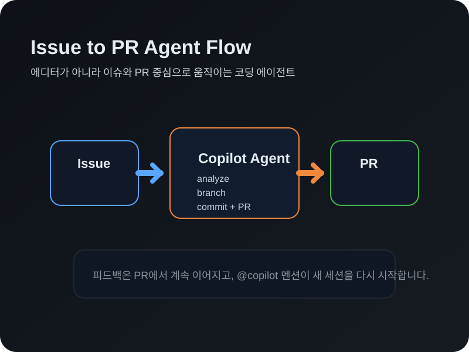

이 실습에서 배우는 것
저장소에서 Copilot 코딩 에이전트를 활성화하고 이슈 할당하기
PR 리뷰·피드백으로 Copilot과 팀원처럼 협업하기
지침 파일과 설정 단계로 에이전트 환경 최적화하기
여러 이슈를 병렬로 위임하고 추적하기
 Copilot 코딩 에이전트
Copilot 코딩 에이전트
코드 에디터 없이 GitHub에서 직접 동작
Copilot 코딩 에이전트는 에디터 기반 Copilot에서 한 단계 더 발전한 형태입니다. 이슈만 할당하면 브랜치 생성부터 PR까지 자율적으로 수행합니다.
에디터 vs 코딩 에이전트
- 인터페이스 — 에디터 대신 이슈 & PR
- 작업 범위 — 로컬 파일 대신 전체 저장소
- 활성화 — 코드 제안 대신 이슈 할당
- MCP 지원 — GitHub·Playwright MCP 기본 내장
- 커스터마이징 — copilot-instructions.md로 안내
워크플로우

 협업 워크플로우
협업 워크플로우
Copilot과 팀원처럼 협업하기
PR 투명성 채널
- 📝 PR 설명 — 실시간으로 업데이트되는 작업 요약
- 🤖 세션 로그 — Copilot의 모든 결정과 단계를 실시간 확인
- 💬 피드백 —
@copilot멘션으로 새 코딩 세션 트리거
@copilot 멘션이 없는 댓글은 일반 댓글로 처리됩니다.인간 팀원을 위한 대화와 Copilot 지시를 명확히 구분할 수 있습니다.
피드백 흐름
리뷰를 제출하면 Copilot이 새 세션에서 피드백을 반영합니다. 이전 세션 로그도 언제든 다시 확인할 수 있습니다.
 환경 커스터마이징
환경 커스터마이징
지침 파일과 설정 단계로 에이전트 최적화
📝 Copilot 지침
.github/copilot-instructions.md에 저장소별 안내와 규칙을 작성합니다.
- 프로젝트 개요·아키텍처·코딩 규칙
- 사용자 상호작용 가이드라인
- 유용한 명령어·스크립트 목록
⚙️ 설정 단계 (copilot-setup-steps.yml)
GitHub Actions 워크플로우로 Copilot의 개발 환경을 사전 구성합니다.
- Python/Node 등 필수 도구 버전 고정
- 프로젝트 종속성 사전 설치
- DB·서비스 등 인프라 준비
일관된 환경에서 안정적인 결과를 보장합니다.
 Agents Panel — 미션 컨트롤
Agents Panel — 미션 컨트롤
여러 작업을 한곳에서 위임하고 추적
Agents Panel은 GitHub 어디서나 열 수 있는 경량 오버레이입니다. 현재 작업에서 벗어나지 않고 Copilot에 새 작업을 전달합니다.
Agents Panel에서 할 수 있는 것
- 🛠️ 페이지 전환 없이 백그라운드 작업 할당
- 👀 실시간 상태로 진행 중인 작업 모니터링
- 🔗 리뷰 준비 시 PR로 바로 이동
- 🤹 여러 이슈를 병렬로 동시 처리
단, 머지 충돌을 피하려면 이슈 간 독립성을 유지하세요!
접근 방법
 안전 & 보안
안전 & 보안
Copilot 코딩 에이전트의 보안 예방 조치
보안 제한 사항
- 브랜치 제한 —
copilot/*규칙의 자체 브랜치에서만 작업 - 방화벽 — 인터넷 접근을 제한하는 구성 가능한 방화벽
- 권한 제어 — 쓰기 권한이 있는 사용자만 이슈 할당 가능
- 숨겨진 콘텐츠 무시 — 이슈의 주석 처리된 코드 등은 무시
- Actions 제한 — 워크플로우 트리거 시 사람의 승인 필요
규칙셋 & 보호
- 브랜치 보호 규칙이 그대로 적용됨
- Copilot 작업은 할당자를 공동 기여자로 커밋
- 기여 그래프가 안전하게 유지됨 💕
항상 사람이 판단합니다.
 GitHub Actions — 실습의 비밀
GitHub Actions — 실습의 비밀
뒤에서 자동으로 돌아가는 검증 시스템
이 실습은 GitHub Actions를 사용해 여러분의 진행을 자동으로 확인합니다.
동작 원리
- 1단계: 코딩 에이전트 활성화 → 이슈 할당 감지 → Copilot 설정 확인
- 2단계: PR 생성 → 리뷰 & 피드백 감지 → 머지 확인
- 3단계: 환경 준비 → push 이벤트 감지 → 지침 & 설정 파일 확인
- 4단계: 병렬 작업 → pull_request closed 감지 → 머지 확인
 핵심 정리
핵심 정리
이슈 할당만으로 브랜치·구현·PR까지 자동 처리
@copilot 멘션으로 피드백 전달, 세션 로그로 투명성 확보
지침 파일 + setup-steps.yml로 안정적 환경 보장
여러 이슈를 병렬 위임 & 실시간 추적
방화벽·브랜치 제한·권한 제어로 안전하게 작업